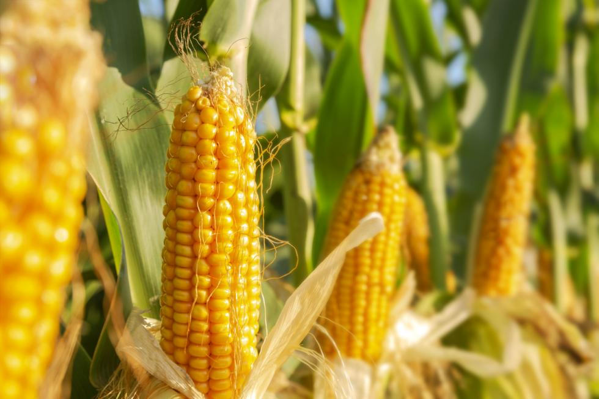
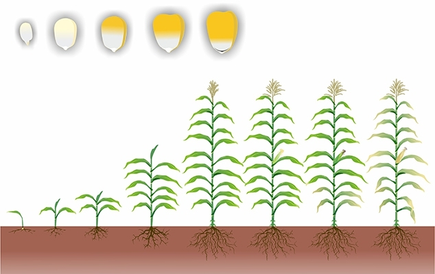

A história do milho no Brasil é uma narrativa rica e intrinsecamente ligada à evolução da agricultura no país. Considerado um dos principais grãos cultivados em território nacional, o milho tem papel fundamental na economia agrícola e na segurança alimentar.

Origem
O milho (Zea mays) é uma das plantas cultivadas mais antigas da humanidade, com suas raízes traçando-se desde as civilizações pré-colombianas da América Central, principalmente na região que hoje corresponde ao México.
No Brasil
A introdução do milho no Brasil ocorreu antes mesmo da chegada dos colonizadores portugueses em 1500. Tribos indígenas já cultivavam e consumiam o milho de forma abundante, utilizando-o como uma das bases de sua alimentação, sendo uma fonte importante de nutrientes em suas dietas.O grão era cultivado em pequenas propriedades, principalmente como fonte de subsistência. Com a chegada dos colonizadores, o milho foi integrado às práticas agrícolas das primeiras fazendas estabelecidas no Brasil.
Mecanização agrícola
O uso de maquinários agrícolas foi um dos fatores cruciais para o aumento da produção de milho no Brasil. Esses equipamentos permitiram a ampliação das áreas de cultivo e a otimização das operações de plantio e colheita.
Floração do milho
No milho, a floração é identificada pelo desenvolvimento da panícula (flor masculina) e da espiga (flor feminina). O milho é uma planta monóica, ou seja, possui duas partes florais separadas na mesma planta. A função da panícula é produzir pólen suficiente para fertilizar os óvulos na flor feminina, ou espiga. Normalmente, a ponta da panícula pode ser vista quase ao mesmo tempo que a ponta da espiga emergente. A liberação do pólen (da panícula) começa cerca de um ou dois dias antes do surgimento dos primeiros estigmas. Uma polinização bem-sucedida resulta em fertilização bem-sucedida e desenvolvimento ideal dos grãos.
Cultivo e colheita do Milho
O cultivo de milho pode ocorrer durante a safra e durante a safrinha. A primeira é entre os meses de outubro a dezembro, logo após o retorno das chuvas. Já a segunda acontece após a colheita da safra, nos meses de janeiro a abril.

Fatores que influenciam o plantio
A temperatura, a luminosidade e a irrigação são fatores que podem influenciar diversas lavouras, e o milho é uma delas. Temperatura: para o desenvolvimento das espigas de milho a temperatura ideal é entre 24° a 30° C. A baixa temperatura pode afetar o desenvolvimento dos grãos. Luminosidade: as lavouras de milho precisam de luminosidade, por pelo menos algumas horas por dia, para seu desenvolvimento. Irrigação: ela deve ser feita para que o solo fique úmido, pois o milho possui raízes muito superficiais, portanto a falta de água pode ser prejudicial ao seu crescimento no início da lavoura.
Quando o milho está pronto para a colheita?
A colheita da lavoura de milho ocorre geralmente de 4 a 6 meses após o plantio. As espigas ficam maduras 50 dias depois do florescimento. Esses períodos podem mudar dependendo da espécie de milho utilizada na lavoura.
Benefícios do milho para nossa saúde
Um dos principais benefícios do milho está no fato de ele ser um alimento rico em antioxidantes (substâncias que têm a capacidade de proteger as células contra efeitos prejudiciais ao nosso organismo), dentre eles os carotenoides – da família do betacaroteno, que causam a coloração alaranjada nas cenouras, por exemplo. Mas onde entra a parte de que o milho ajuda na visão? Então, esses componentes estão presentes na nossa retina (camada fina no fundo dos nossos olhos) e evitam danos sérios à nossa visão, normalmente causados pelo excesso de luz azul (a luz presente em celulares, computadores e na TV), indícios da degeneração muscular (quando músculos que controlam o movimento enfraquecem) e até mesmo a catarata. Assim, comer milho pode ser muito benéfico para a visão, evitando doenças relacionadas aos olhos.
Tipos de milho para plantio
Grãos
Milho para silagem
Milho pipoca
Milho dentado
Milho doce
Milho verde
Milho branco
Milho duro
Milho farináceo
✧･ﾟ: *✧･ﾟ:*Receitas com milho✧･ﾟ: *✧･ﾟ:*
Bolo de Milho
Ingredientes:
1 lata de milho verde com água e tudo
1/2 lata da mesma de óleo
1 lata da mesma de açúcar
1/2 lata da mesma de fubá
4 ovos
2 colheres bem cheias de farinha de trigo
2 colheres de coco ralado
1 colher e 1/2 de chá bem cheia de fermento em pó
Modo de Preparo:
Bata bastante todos os ingredientes no liquidificador, depois bem batido acrescente o coco ralado e o fermento e misture, coloque para assar
Pode colocar na forma redonda de buraco e na quadrada, a forma deverá ser untada e enfarinhada
O tempo de preparo na redonda é mais rápido, mas a receita fica menor, para aumentar faça 2 vezes
O bolo fica parecendo pamonha, bem cremoso, fica uma delícia!
Leve ao forno preaquecido a 180ºC por, aproximadamente, 40 minutos
Em um recipiente grande, rale as espigas do milho em ralo fino, para obter aquela massa do milho verde. Uma outra dica é cortar o milho e bater no liquidificador e depois passar numa peneira. Sim, dá um trabalhão, mas vai com fé que irá ficar uma delícia!
Aqueça a banha até derreter e ficar líquida. Quando estiver bem quente você pode despejar na massa do milho (vai até dar aquela estalada de tão quente) e mexer bem para deixar a massa homogênea. Caso não tenha ou prefira, pode também usar a manteiga;
Separe a massa em 2 recipientes, caso queira fazer metade da pamonha doce e a outra metade
Na receita doce, acrescente o açúcar (caso queira fazer meia receita, acrescentar somente 1 xícara de açúcar e experimentar para ver se está ao gosto) e uma pitadinha de sal. E irá rechear com um pedaço farto de queijo (no caso a dona Clélia usou o queijo cabacinha, lá do Goiás, mas pode ser o de sua preferência);
Já na receita salgada, somente acrescente o sal, um pouquinho da pimenta dedo de moça picada (à gosto). E rechear com o queijo com um pedaço da linguiça, que ficará maravilhoso!
Em um caldeirão, colocar bastante água e deixar em fogo alto para ferver enquanto embala as pamonhas;
Para embalar a pamonha na palha, tem um segredo interessante: Pegue a palha do milho verde e lave-as bem e corte uma das partes, fazendo com que ela tenha o formato triangular;
Para encher a palha de massa, pegue uma palha e dobre unindo as duas partes, como se fosse um cone e dobre a pontinha de baixo para cima, prendendo com a pinça dos dedos e formando um copinho;
Com uma concha, pegue a massa e encha bem esse copo. Quando ele estiver cheio, pode soltar os dedos que estava segurando a pontinha de baixo, pois o peso da massa irá deixar esse copinho firme. Pegue outra palha e faça o mesmo formato do copinho por cima, fechando a pamonha (caso a palha seja menor e não feche dando a volta toda, a dica é pegar mais uma palha para complementar essa cobertura);
Para finalizar, dobre a pontinha (agora para baixo) formando o pacotinho que é o famoso formato da pamonha e fechando com a ajuda de um elástico (existem alguns próprios para culinária, que não interferem no sabor e podem ser aquecidos. A dica da dona Clélia é comprar 2 cores de "liguinhas" ou elásticos, para diferenciar a pamonha doce da salgada.
Finalizando a embalagem da pamonha, vá colocando no caldeirão com água fervendo para cozinhá-la.
4 espigas de milho verde (ou 2 latas de milho sem o líquido)
3 xícaras de chá de leite (720 ml)
1/2 colher de sopa de manteiga
1 lata de leite condensado (395 gramas)
Canela em pó a gosto
Modo de preparo
Reúna os ingredientes do curau de milho com leite condensado. Tente escolher o milho com a coloração mais clara, pois normalmente são os grãos mais macios;
Higienize as espigas e, em uma tábua, com o auxílio de uma faca, retire os grãos da espiga cuidadosamente;
Em um liquidificador, coloque os grãos de milho extraídos das espigas e o leite. Bata, em velocidade máxima, até obter uma mistura homogênea (cerca de 5 minutos);
Disponha uma peneira ou pano limpo em cima de uma tigela. Despeje a mistura do liquidificador na peneira e coe o líquido - você pode utilizar o bagaço de milho para fazer um bolo de milho delicioso;
Em uma panela, em fogo médio, derreta a manteiga e junte o líquido coado. Cozinhe, mexendo sempre, até a mistura obter uma consistência cremosa;
Assim que a mistura ferver e engrossar, inclua o leite condensado e continue mexendo por mais 5 minutos, ou até incorporar e o creme ficar bem encorpado e cremoso;
Desligue o fogo e transfira o curau para um recipiente. Se quiser, você pode servir quente ou levar à geladeira, por cerca de 3 horas, para firmar e gelar - cubra com plástico em contato, evitando que forme uma película sobre o curau;